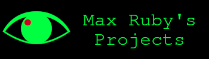

Welcome to Max Ruby's Website!
I am an Image Scientist who is currently spinning up a project related to Image Forensics.
This github page is a simple portfolio, and over time this will evolve into a more elaborate website.
Academic work:
What follows is the work that I did when I was a student. The descriptions of the research are in plain language.
MU-Net:
The MU-Net paper is here.
We had a camera array that took three pictures of a person in a car. We wanted to identify them through the windshield.
Part of the scheme was that we wanted to fuse these pictures together and get a "good" picture of the person's face. This couldn't be done reliably with only one camera, primarily due to things like camera glare - we could set up the polarizer lenses to block some of the glare, but the glare that was blocked would change based on how the polarizer lens was set up.
We had an algorithm that does HDR fusion - Mertens - but it wasn't performing sufficiently well for our problem.
I pointed out that we could improve upon this by developing a neural network which performs essentially this algorithm - by cleverly building a custom network with weights handpicked to initialize to that algorithm - and then train it so that it outperforms the conventional algorithm.
This worked well - the MU-Net's HDR improved the face recognition's AUROC by 37% - and it's probably one of the more theoretically interesting pieces of work I've put out.
Deep Backprojection:
The Deep Backprojection paper is here.
The idea is that we might be able to train a neural network to do the inverse radon transform better if we feed the network an intermediate result of the standard algorithm.
This appears to have worked reasonably well; the PSNR improved by about 1.4dB on average, compared to the standard Filtered Back Projection algorithm.
Projects:
What follows is a list of my projects.
RIFT:
I am currently working on a toolkit for Image Forensics.
The first step of this is independent testing of some of the research in this area.
However, a few of the older, conventional tools are already implemented.
Contact Info:
It's in my resume, which is here
Contact me if:
1) You are an image science researcher who wants to collaborate.
2) You have found a bug in my code or an error in one of my projects.
3) You are an engineer/programmer working for an organization in charge of developing similar tools and have questions.